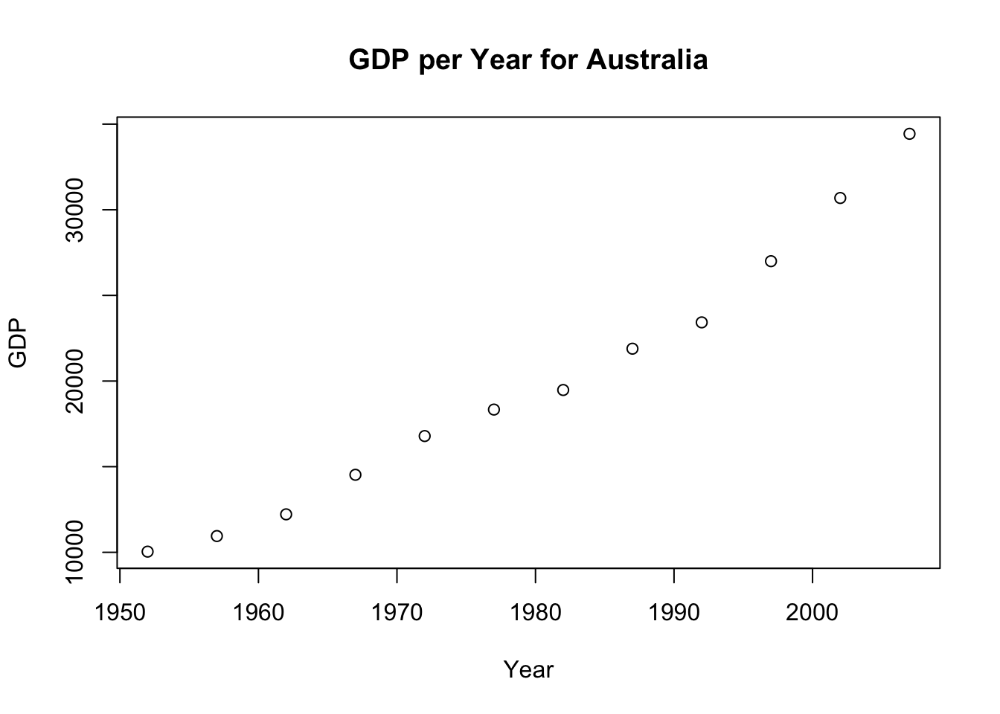
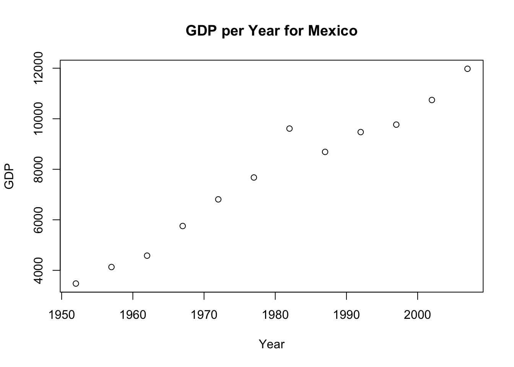

Final exercise on gapminder population data
Guillermo Ponce
10/4/2015

A steep increasing trend in GDP for Australia

In the case of U.K., it also shows a similar trend to Australia.

Mexico shows an increasing trend in GDP after 1984
The average, minimum and maximum life expectancy for these countries are:
## Country Avg_LifeExp Min_LifeExp Max_LifeExp
## 1: Australia 74.66292 69.120 81.235
## 2: Mexico 65.40883 50.789 76.195
## 3: United Kingdom 73.92258 69.180 79.425Distribution of life expectancy. Standard bin-width

Bin-width changed